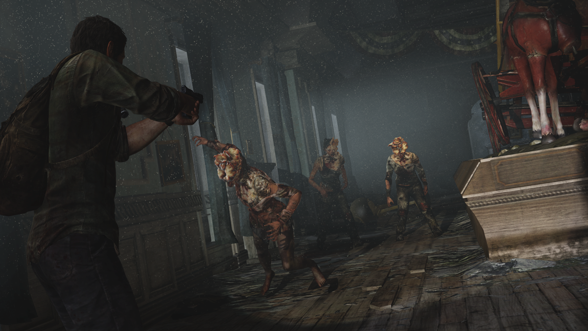

<!doctype html>  
<html>
  <head>
	  <title>The Most Underrated Horror Games Of 2023
	  <link href="style.css" rel="stylesheet" type="text/css">
	  <meta name="viewport" content="width=device-width, intial-scale=1">
		  
		 <link href="https://fonts.googleapis.com/css2?family=Lato&display=swap" rel="stylesheet"> 
		  
		  <link rel="preconnect" href="https://fonts.googleapis.com">
<link rel="preconnect" href="https://fonts.gstatic.com" crossorigin>
<link href="https://fonts.googleapis.com/css2?family=Creepster&display=swap" rel="stylesheet">
<style type="text/css">
.TMUHO23 {
    font-family: Gotham, Helvetica Neue, Helvetica, Arial, sans-serif;
}
.TMUHO23 {
    font-family: Malgun Gothic;
}
</style>
  </head>
<body>
<header>
	<h1>Horror Reviews </h1>
 <nav>
  <ul>
   <li>
    <a href="Phasmaphobia.html">Phasmaphobia</a> 
   </li>
   <li>
    <a href="TheOutlastTrials.html">The Outlast Trials</a>
   </li>
	    <li>
    <a href="Inscryption.html">Inscryption</a> 
   </li>
   <li>
    <a href="AtDeadOfNight.html">At Dead Of Night</a>
   </li>
   </ul> 
 </nav>
</header>
     <main>
   <!--main content goes here-->
		 <h1 class="TMUHO23">The Most Underrated Horror Games Of 2023</h1>
<article class="item">
	
    <h2>looking for some new and fresh games just in time for halloween?</h2>
	
	  <p>Its not surprising that gaming has evolved into a popular pastime in 2023, fostering a sense of community and enabling people to work together for both entertainment and knowledge. People adore games like Five Nights At Freddy's and Dead By Daylight, but what about the lesser-known ones? HorrorReviews features independent video games that should have the chance to gain popularity and deserve a community of passionate and avid gamers.</p>
    
</article>
<article class="item">
  
</article>
<article class="item"> 
    <h2>So What Are These Games?</h2>
    <blockquote>
These games range from first person multiplayer survival, to singleplayer rogue-like card games that immerses the player into the depths of fantasy and secrets. Some of my favorites include The Outlast Trials, Inscryption and Phasmaphobia, but one of my all time favorites being At Dead Of Nigh!
</blockquote>
</article>

<!--end of main content-->
</main>
<footer>
<p>&copy; Copyright 2023 HorrorReviews</p>
</footer>
	</body>
</html>